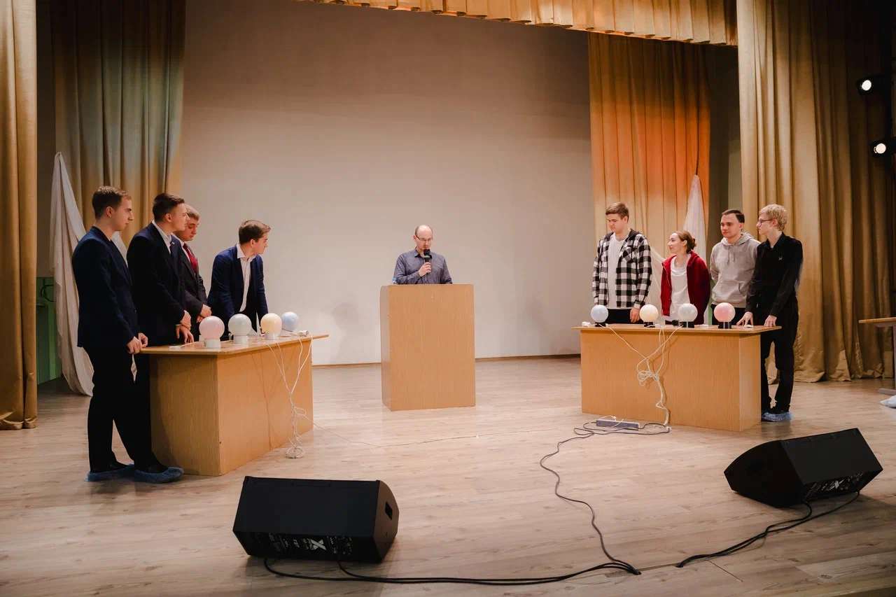
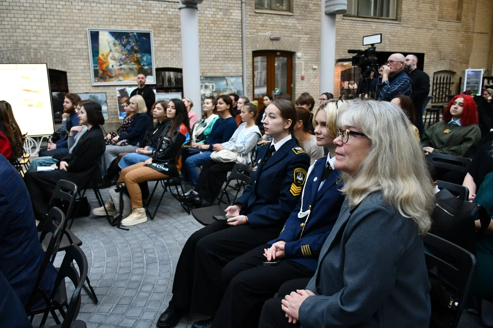

АВТОНОМНАЯ НЕКОММЕРЧЕСКАЯ ОРГАНИЗАЦИЯ ДОПОЛНИТЕЛЬНОГО ПРОФЕССИОНАЛЬНОГО ОБРАЗОВАНИЯ «ОБРАЗОВАТЕЛЬНЫЙ ЦЕНТР «СФЕРА УСПЕХА»
Проект «Студенческая лига «Фонтанка» - комплекс мероприятий, направленный на обучение участников студенческого КВН движения Санкт-Петербурга с применением полученных знаний на практике в рамках сезона студенческой лиги КВН.
Сезон студенческой лиги КВН "Фонтанка" состоял из 3 этапов:
- 1 образовательный блок и применение на практике полученных знаний на 1 рейтинговой игре;
- 2 образовательный блок и применение на практике полученных знаний на 2 рейтинговой игре;
- 3 образовательный блок и применение на практике полученных знаний на Финальной игре сезона.
Ввиду того, что Студенческая лига «Фонтанка» в первую очередь обучающая лига и нацелена на решение запроса студентов, начинающих свой КВНовский путь, первые два тура команды играют без вылетов, т.к. важно дать командам возможность сыграть как можно больше игр в сезоне и максимально правильно, под присмотром опытных наставников, применить полученные знания на практике. Каждый этап сезона сопровождается рядом образовательных мероприятий с участием компетентных приглашённых спикеров и постоянных преподавателей Лиги. Все знания будут передавать эксперты юмористического жанра (статус не ниже - участники или организаторы ТВ лиг КВН).
Зачем КВН? В настоящее время все больше работодателей при приеме на работу уделяют внимание не только профессиональным знаниям и навыкам, которые получают в процессе освоения основных образовательных программ, но и так называемым навыкам "soft skills", коммуникативные навыки, адаптивность, стрессоустойчивость, умение работать в команде, эмоциональный интеллект, тайм менеджмент и многие другие. И всему этому можно научиться в легкой игрой форме в формате КВН.
 Количество благополучателей: 600 человек.
Количество волонтеров: 20 человек.